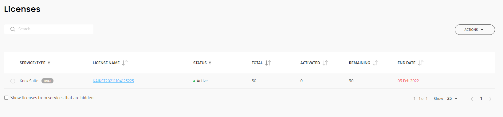
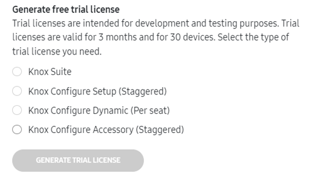
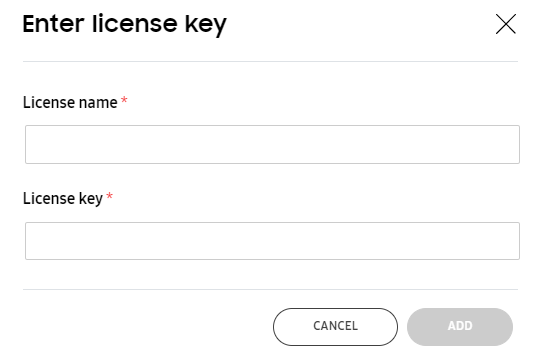
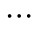
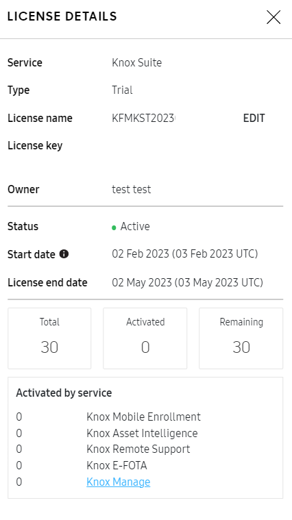

Manage Knox licenses
Last updated June 26th, 2024
The Knox Admin Portal offers a consolidated Licenses page to check your available license seats in one view. You can add, manage, and delete your Knox cloud service license keys on this page, and use one license for all your Knox Suite services.
To add or remove license seats, contact your license reseller. Your reseller can also add new licenses to your tenant on your behalf.
To see the consolidated licenses page, in the Knox Admin Portal navigation pane, click Licenses. You can also navigate to this page through the individual Licenses page in the console of each Knox service.

The license list includes Knox Suite, Knox Manage, Knox E-FOTA, Knox Asset Intelligence, Knox Configure, and Samsung Care+ for Business licenses, and contains the following information:
| Field | Description |
|---|---|
| SERVICE/TYPE | The Knox service the license is for, and, if applicable, the type of license. |
| LICENSE NAME | The human-friendly name given to the license. |
| STATUS | The license status, as defined by the service the license is for. |
| TOTAL | The total number of seats on this license. |
| ASSIGNED | The number of devices that have a license seat assigned to them, but have not yet activated the seat. This column is only available if your enterprise is registered for a service that supports license assignments. |
| ACTIVATED | The number of devices that are successfully enrolled in the service. Click the number to see a filtered list of devices in that service’s console. |
| REMAINING | The number of license seats available, calculated by subtracting the activated and assigned seats from the total number of seats on the license. |
| END DATE | The date the license expires, after which new devices can’t be enrolled with this license and the service period ends. For staggered licenses, the activation or assignment end date represents the last day that seats can be activated on that license. After that date, the license cannot be assigned or activated on devices even if there are seats remaining, but currently enrolled or activated devices remain so for the rest of the service period. |
In the search bar above the license list, you can search for a license name or key. The list updates to show all licenses that partially or fully match your search query.
Get a license
Click ACTIONS > Get a license to view the different ways you can obtain a Knox license. Select from the following options:
| Action | Result |
|---|---|
| GENERATE TRIAL LICENSE | Intended for testing purposes, a trial license is valid for 3 months and supports up to 30 devices. You can select which type of license to generate the trial key for. |
| FIND RESELLER | Opens a list of Knox resellers in your region who you can purchase a commercial license from. After you purchase a license, your reseller can add it to your tenant for you. |
| GENERATE KNOX SUITE LICENSE | Opens your Enterprise Edition license dashboard to generate a Knox Suite license key. Please ensure your reseller has uploaded your Enterprise Edition devices to your account beforehand. |
Generate a free trial license
If you don’t have a Knox license already, you can generate a free trial license to test out Knox services. These licenses are valid for 3 months and support up to 30 devices. If your trial license expires, you can generate a new one.
You can get a trial license for:
- Knox Suite. This includes Knox Platform for Enterprise, Knox Mobile Enrollment, Knox Manage, Knox E-FOTA, and Knox Asset Intelligence.
- Knox Configure Setup (Staggered)
- Knox Configure Dynamic (Per seat)
- Knox Configure Accessory (Staggered)
To find out more about Knox Configure license types, see Manage licenses.
To generate a free trial license:
-
Click ACTIONS > Get a license.
-
In the Get a license dialog, select the type of trial license you want to generate.

-
Click GENERATE TRIAL LICENSE.
The Licenses page automatically updates to show your new trial license. Click the license name to display its details. You can see the start and end date of the license, edit its name, and more.
Enter a license key
To enter a license key that you’ve obtained:
-
Click ACTIONS > Enter license key.
-
A dialog prompts you for a friendly license name and the license key. Once you enter a valid license key, its corresponding license information shows underneath.

-
Click ADD to confirm the license addition to your account.
The Licenses page automatically updates to show your license. If you’re registering a license that has an activation date in the future, a notification alerts you that the license can be assigned to devices before the activation date, and the devices are only configured and enrolled in the respective service or services once the license is active.
Assign a license
This action is only available for Samsung Care+ for Business licenses. To assign a Samsung Care+ for Business license:
- Click Actions > Assign license.
- In the Assign license dialog, select the devices you want to assign to the license.
- Click ASSIGN.
Replace or upgrade a license
If you’ve obtained a new Knox license with additional seats, or if you want to upgrade from a standalone license to a Knox Suite license, you may want to replace your existing license. The license replacement feature is only available for the following services, and is subject to certain conditions:
-
Knox Suite
-
Knox Manage
-
Knox E-FOTA
-
Knox Asset Intelligence
-
-
Knox Configure
Refer to each service’s license documentation for more information.
To replace or upgrade a license:
- Click Actions > Replace license.
- In the Select License dialog, you can see a list of active licenses available for replacement. This list varies depending on each service’s licensing logic. Select a license to replace your current one with.
- Click DONE.
For example, if a Knox Suite license is replaced with a Knox Manage license, only the Knox Manage-specific seats on the Knox Suite license are affected. In other words, if the device is enrolled in any other services in Knox Suite, it occupies a seat on the Knox Suite license and a seat on the Knox Manage license, for a total of 2 seats. If the device is only enrolled in Knox Manage, the Knox Suite license seat is freed after the replacement, and a seat on the Knox Manage license is used instead.
You can only replace a Knox Suite license with a Knox Manage license through the Knox Manage console.
Delete a license
If you have an old or expired license you no longer need, you can choose to delete it from the licenses list. You won’t be able to delete licenses that are currently in use or have activated devices associated with them. Only admins with the license management permission can delete licenses, and any deletions are recorded in the activity log.
License deletion is irreversible.
To delete a license, first make sure there are no devices associated with it. Then, do as follows:
- In the license list, click a license name to open its details.
- In the bottom-right corner of LICENSE DETAILS, click  > Delete license.
If you have the license management permission but the Delete license option is unavailable, one or more of your services may have conditions preventing you from deleting the license. Make sure all devices associated with the license are unenrolled first, and refer to the respective service’s license documentation for more information.
View license information
In the license list, click a license name to open its details. In LICENSE DETAILS, you can find general information about the service, type, name, and owner. Details about its status, start and end dates, and seat counts are also available. For Knox Suite licenses, a further seat activation breakdown by service is available.

Manage other Knox licenses
If you have Knox Platform for Enterprise or Knox Mobile Enrollment Direct license keys, you can also manage these in the Knox Admin Portal. In the OTHER KNOX LICENSES block on the Licenses page, click Manage license keys.
A new page opens with a list of the Knox Platform for Enterprise and Knox Mobile Enrollment Direct license keys you have. On this page, you can also:
- Check your license details
- Check the status of devices associated with your license
- Deactivate devices from a license
To check the status of devices associated with your Knox Platform for Enterprise license:
- Under Device Management, click Device Status.
- Enter your Knox license key. Then, enter a list of the device IMEIs you want to check, or upload a CSV file with the IMEIs you want to check. You can also download a template for the file.
- After entering your license and device IMEI information, click CHECK STATUS.
For more information about other Knox licenses, see:
- Generate or renew a Knox Platform for Enterprise license
- Get a Knox Suite license for Enterprise Edition devices
Manage other Knox licenses as an MSP
If you’re an MSP admin, you have the ability to manage Knox Platform for Enterprise licenses on behalf of your customers. You can:
- Generate Knox Platform for Enterprise Premium license keys
- Renew Knox Platform for Enterprise Premium license keys
On this page
Is this page helpful?